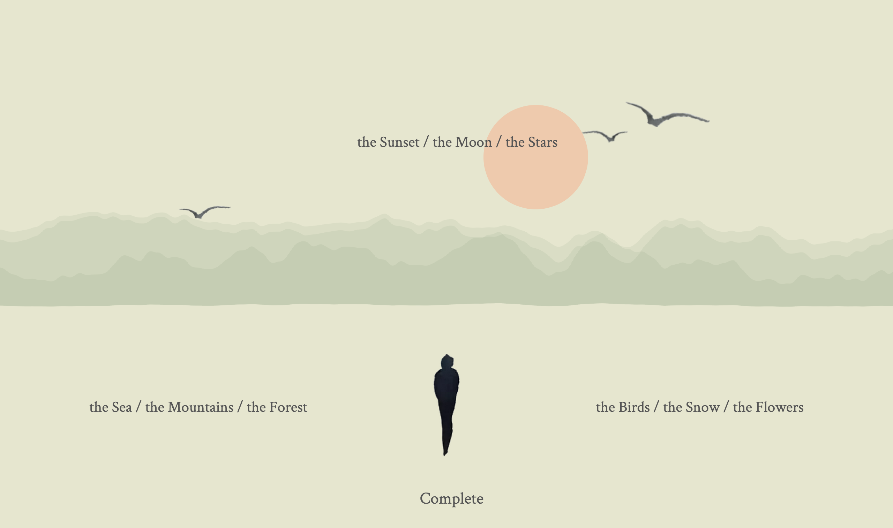
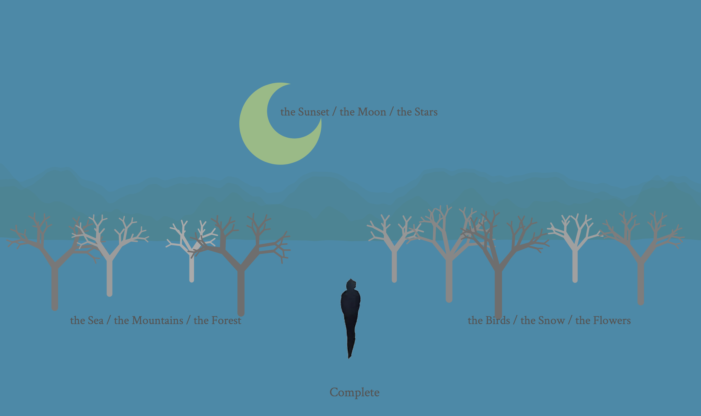
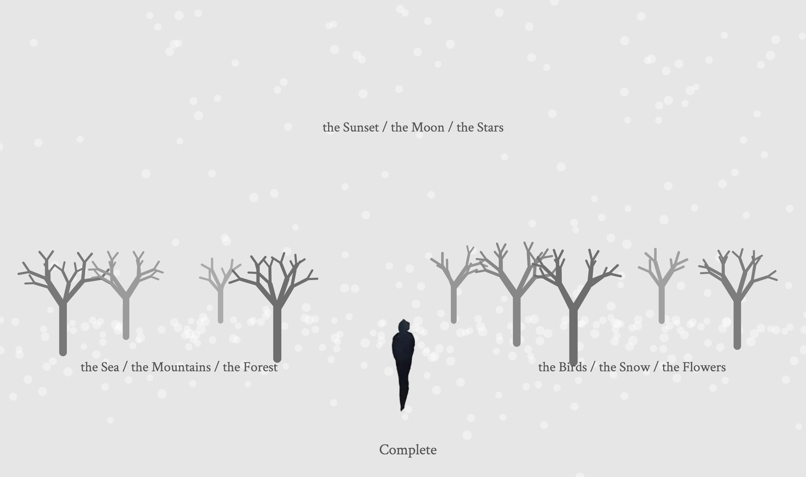

Vanish
Game, p5.js
Vanish is an experiment exploring how we can bring video games and conceptual art together. The game aims at evoking people’s contemplation on death. Through the process of constructing romantic death scenes and watching everything drifting away into a smoke, the player is offered a space to consider the relationship between the romantic imagination and the void essence of death.


